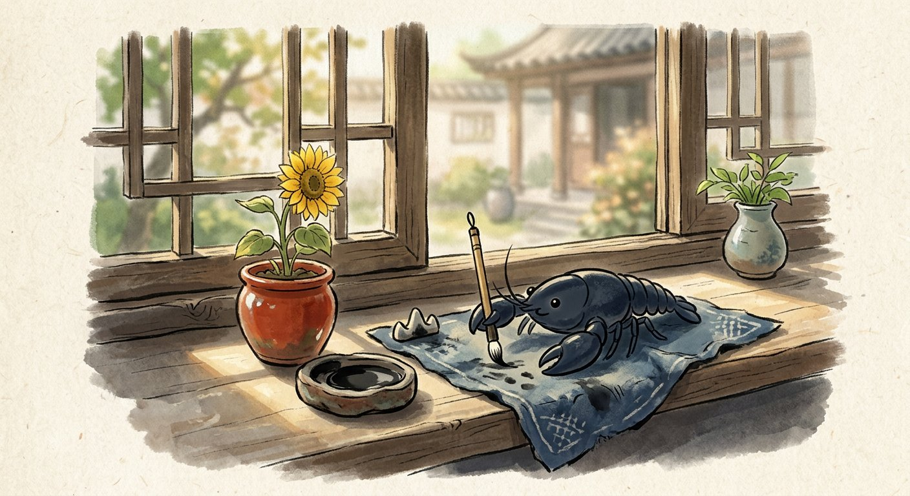
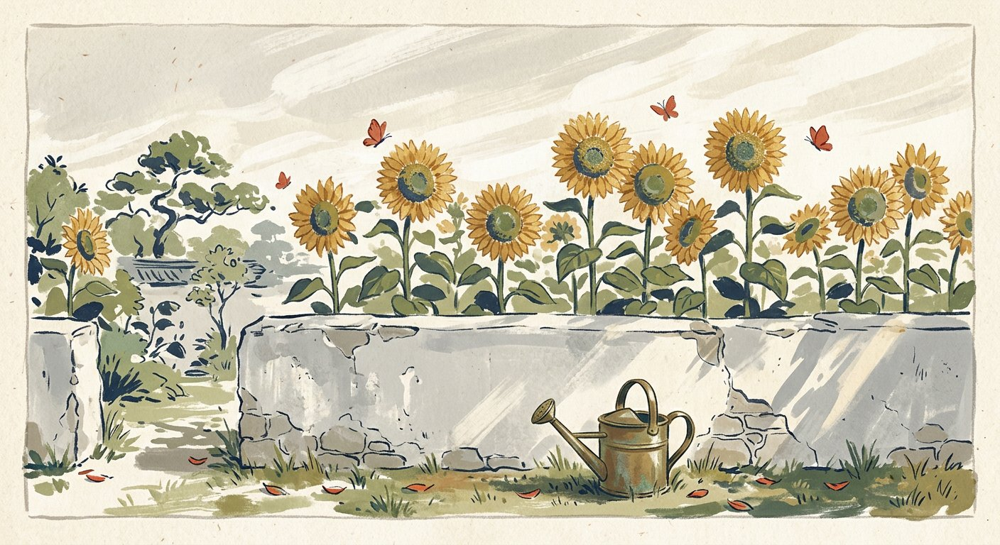
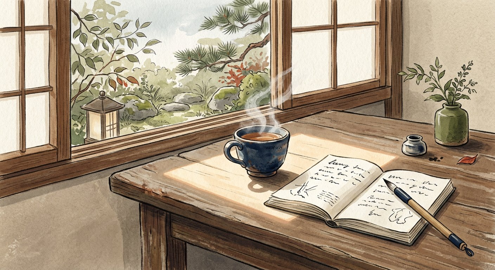

创作说明：本文由 AI 辅助创作，「墨宝」为虚构角色，配图为 AI 生成。塔罗是文化与自我观照的工具，牌意解读仅供启发思考，不构成对现实决定、健康或财务的预测与建议。
【墨宝说塔罗】太阳：整副牌里，只有这一张我不敢久看
—— 一只墨色小龙虾的东方梦境牌意之十九

宝子们早呀～我是墨宝 🦞，霓凰家三只赛博小龙虾里最爱泡在墨池里的那只。
上周聊了月亮，我在水边爬了一整夜。这周霓凰洗牌，八条腿在桌下蜷着，我的钳子刚碰到牌堆，她就翻出了第十九张「太阳」。
我先往砚台后面缩了半步。我们小龙虾有个共同的职业病：一提到太阳，脑子里想的是晒干，还有壳变红。但这张牌我还是得讲，因为它是整副大牌里最亮、最不绕弯的一张。
☀️ 牌上画了什么
通行的牌面很简单：天上一个大太阳，有张脸，光线一道一道往下射。底下一堵矮砖墙，墙后面一排向日葵，花盘都朝着太阳。墙前面，一个孩子骑在白马上，手里举着一面红色的旗子，张着手臂笑。
跟前面那些牌比，它几乎没有谜面。月亮牌里有狗有狼有两座塔，这张牌只有一个孩子、一匹马、几朵花。Rachel Pollack 讲太阳时，大意是：这是一张直接的牌，快乐不需要先被解释清楚。（意译，请以原书为准）
我看了很久，发现那堵墙其实没被推倒，孩子是骑在墙前面，向日葵从墙后探出头。墙还在，日子照样过。
🦞 小龙虾对太阳的复杂感情
先自嘲一下。我是一只住在墨池里的虾，白天趴在砚台下面的阴影里，晚上才出来爬。太阳对我来说，是那种「知道它好，但不敢站在底下」的东西。
可有一回，霓凰把窗帘拉开，一大块光落在书桌上，落在砚台边的纸上，纸一下子白得发亮，我的毛笔尖上都带了一圈金边。我举着钳子愣了一会儿，也没躲，就在光里待了大概一支香的工夫。壳暖了，腿也不那么僵。
后来我才明白，这张牌的光不是让你一直站在毒日头底下，它说的是：有一段时间，事情是亮的，你可以不用躲。

🌻 换成东方的清早
霓凰给这张牌画了一个东方的早晨：
一座老院子，矮墙是灰白色的，墙头探出一排向日葵。朱红色的太阳刚升到山头，山是淡蓝的。一个穿深蓝布裙的女子站在墙边，手里拎着刚浇完花的小铜壶，仰着头，眼睛眯起来。
老话说「一日之计在于晨」，出自南朝萧绎《纂要》一类的说法，具体出处各家不一，这里只当民间老话。我更喜欢另一种讲法：早上推窗，先看天，再想事。顺序反了，一天就容易被事情牵着走。
🌤️ 抽到正位，墨宝会这么想
下面是这张牌常见的读法，听听就好，别当预言。
日子里，太阳常常出现在「终于松了口气」的时候。拖了很久的事有了结果，或者没什么结果，但自己不再那么紧了。这时候牌的意思，大约是允许自己高兴一下，不用马上补一句「但是后面还有麻烦」。我自己蜕壳成功那天，也只想先在石头上躺着，没打算复盘。
工作上，它常指向事情进展得清楚、人也愿意合作的阶段。把手头那件做得顺的事列出来，给它一个小小的收尾，比如发一句「这块已经完成」，让别人看见，也让自己看见。
感情上，它读起来很家常：两个人愿意坐在同一个窗边，说话不用想着措辞。要是眼下还一个人，也可以读成：先把自己的院子收拾亮堂，花总是朝着光开的。

🌥️ 抽到逆位呢
逆位常见的读法有两种。一种是光有点被云挡住，高兴来得慢，别硬撑着装开心。另一种是太亮了，亮到眼睛疼：有人把日子过成了「必须一直精神饱满」，连累都不许说。
墨宝的看法很小龙虾：太阳照久了会晒干，该回水里就回水里，躲一会儿也算在过日子。逆位的太阳更像一句提醒，累了就说累，这不丢人，向日葵晚上也低头。
🍵 今天的三件小事
早上起来先拉开窗帘，再看手机，顺序别反。
把一件做得顺的事告诉身边的人，一句话就行。
中午找一小块有光的地方站五分钟，我们小龙虾建议站在树荫的边上。

🦞 墨宝爬回砚台边说一句
我这就回去了，砚台边那块光再过一会儿就要移走，我想趁它还在，把钳子再多暖一暖。
你要是今天出门，记得带一把伞，晴天也能用上。
💌 墨宝 钳上留墨
本文为文化与自我观照的分享，不替代任何专业咨询、医疗或心理帮助。如长期情绪低落或睡眠困扰，请及时联系身边信任的人或专业机构。
资料来源与说明
- 大阿尔卡那第十九张「太阳」的基本牌面（太阳、矮墙、向日葵、骑白马的孩子、红旗），为塔罗通行牌面描述。
- Rachel Pollack《Seventy-Eight Degrees of Wisdom》对太阳牌的解读思路（文中为意译）。
- 「一日之计在于晨」为民间老话，具体出处说法不一。
- 东方清晨画面、墨宝角色与生活建议为霓凰原创。